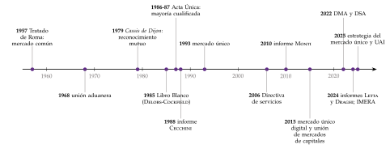
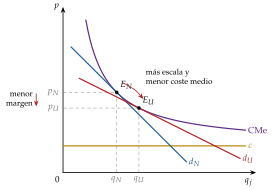
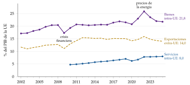
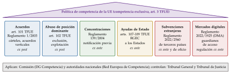
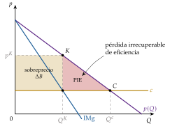
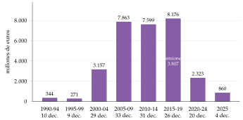
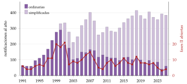
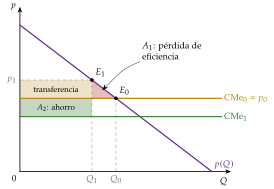
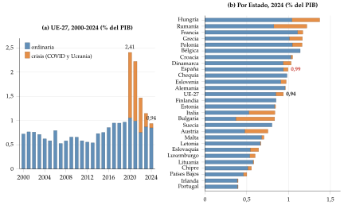

Tema 3.B.39
El mercado único de la Unión Europea. El principio de libre circulación de mercancías, servicios, personas y capitales. La política de competencia.
Las 4 libertades (Cassis de Dijon, Keck, Schengen), Cecchini, Letta y Draghi, efecto procompetitivo, cárteles, Williamson, ayudas de Estado y DMA.
Exclusivo Material exclusivo de victorgutierrezmarcos.es y la app Oposición TCEE · DCE. Puedes usarlo libremente para tu estudio personal. No se autoriza su incorporación a otras plataformas, aplicaciones o servicios. Condiciones de uso.
Introducción
Enganche:
«El pez grande se come al chico», dice el refrán. En 1988, el informe Cecchini calculó que en más de la mitad de las ramas de la industria europea cabían 20 empresas de tamaño eficiente en un mercado comunitario, frente a solo 4 en el mayor de los mercados nacionales: los peces europeos eran pequeños porque nadaban en estanques pequeños.
36 años después, el informe Draghi (2024) volvió al refrán desde el otro lado: frente a las empresas de Estados Unidos y de China, las europeas siguen siendo pequeñas, y pidió que la política de competencia mirara más la escala y la innovación. En 2026, la Comisión prepara unas nuevas directrices de concentraciones que lo recogen.
La pregunta que recorre la exposición es: ¿cómo agranda el mercado único el estanque para que los peces crezcan, y cómo impide la política de competencia que el pez grande se coma al chico?
Relevancia:
Es el núcleo económico de la Unión: 27 Estados, unos 450 millones de consumidores, 26 millones de empresas y un PIB de 18 billones de euros, al que se suman Islandia, Liechtenstein y Noruega por el Espacio Económico Europeo. La Comisión estima que eleva el PIB de la Unión al menos un 3-4 % y que ha creado 3,6 millones de empleos.
Está lejos de completarse: el Fondo Monetario Internacional (FMI) estima que las barreras que quedan dentro de Europa equivalen a un arancel del 44 % en las manufacturas y de hasta el 110 % en los servicios.
Para España: más de la mitad de sus exportaciones de bienes van a otros Estados de la Unión, y su política de competencia, sus ayudas públicas y buena parte de su regulación se deciden o se controlan en Bruselas [ver tema 4.A.15] [ver tema 4.A.22].
Contextualización:
Qué es: el mercado interior es «un espacio sin fronteras interiores, en el que la libre circulación de mercancías, personas, servicios y capitales estará garantizada» (art. 26 del Tratado de Funcionamiento de la Unión Europea, TFUE). Es una fase de la integración más profunda que la unión aduanera y menos que la unión económica [ver tema 3.B.10].
2 formas de integrar, en la terminología de Jan Tinbergen (1954):1
la integración negativa: quitar barreras (aranceles, controles en frontera, normas que discriminan);
la integración positiva: crear reglas e instituciones comunes (armonización, política de competencia) para que el mercado sin barreras funcione.
Cómo se reparten las competencias: el mercado interior es una competencia compartida entre la Unión y los Estados (art. 4 TFUE); las normas sobre competencia necesarias para su funcionamiento son una de las 5 competencias exclusivas de la Unión (art. 3 TFUE) [ver tema 3.B.36].
Problemática:
¿Qué es el mercado único, cómo se ha construido y qué ha aportado?
¿Qué garantiza cada una de las 4 libertades y qué barreras quedan?
¿Por qué hace falta una política de competencia común y cómo controla a las empresas y a los Estados?
¿Debe la Unión aceptar empresas más grandes para competir en el mundo?
Estructura:
La exposición va del mercado en su conjunto a cada una de sus libertades y de ahí a las reglas que lo protegen:
I. El mercado único (I): base jurídica, historia de Roma a la estrategia de 2025 y efectos económicos, con el modelo de la integración de mercados oligopolísticos.
II. Las 4 libertades (II): mercancías, servicios, personas y capitales, con su base jurídica, su jurisprudencia y lo que falta.
III. La política de competencia (III): sus 4 pilares (acuerdos, abusos, concentraciones y ayudas de Estado) y los instrumentos nuevos, con los modelos del coste de los cárteles, del compromiso de Williamson y de la carrera de subvenciones.
3.B.39. El mercado único de la UE y la política de competencia
Introducción2′30″
I. El mercado único: fundamentos, historia y efectos7′
1. Fundamentos jurídicos básicos del mercado interior
2. De Roma a la estrategia de 2025
3. Los efectos económicos del mercado único
II. Las 4 libertades de circulación9′
1. Mercado interior de bienes
2. Mercado interior de servicios
3. Libre circulación de personas
4. Libre circulación de capitales
III. La política europea de competencia10′
1. Motivación de la teoría económica
2. Marco jurídico: los 4 pilares
3. Promoción, coordinación y debate actual
Conclusión1′30″
Reparto del cante: introducción, 2′30″; I, 7′ (I.1, 1′; I.2, 2′30″; I.3, 3′30″, casi todo para el modelo); II, 9′ (II.1, 3′; II.2, 2′30″; II.3, 1′30″; II.4, 2′); III, 10′ (III.1, 1′; III.2, 8′: acuerdos y cárteles, 2′30″; abusos, 1′30″; concentraciones, 2′; ayudas de Estado e instrumentos nuevos, 2′; III.3, 1′), y conclusión, 1′30″. Los gráficos imprescindibles son el del mercado integrado, el del coste del cártel y el del compromiso de Williamson; la matriz de la carrera de subvenciones y la figura de los pilares ayudan a ordenar. Las libertades se cantan con el mismo patrón (base jurídica, jurisprudencia, derecho derivado, balance). Lo que va en cajas grises, en notas y en los anexos es para las preguntas del tribunal.
Notación. En el modelo del mercado integrado, \(p(Q)=a-bQ\) es la demanda inversa de cada mercado, con \(b=1/S\) y \(S\) el tamaño del mercado (símbolo local de este tema); \(c\) y \(\mathrm{CF}\) son el coste marginal constante y el coste fijo de cada empresa, \(\mathrm{CMe}(q)=c+\mathrm{CF}/q\); \(n\) es el número de empresas y \(q_j\) la producción de la empresa \(j\). En el del cártel, \(\Delta B\) es el beneficio ilícito, \(\pi\) la probabilidad de que se descubra y se sancione el cártel y \(M\) la multa. En el compromiso de Williamson, \(p_0=\mathrm{CMe}_0\) y \(p_1\) son los precios antes y después de la fusión, \(\mathrm{CMe}_1\) el coste medio después y \(\varepsilon\) la elasticidad de la demanda. TFUE: Tratado de Funcionamiento de la Unión Europea.
I. El mercado único: fundamentos, historia y efectos
Empezamos por el mercado único en su conjunto: qué dicen los Tratados, cómo se construyó y qué se gana con él.
Conclusión anticipada: el mercado único se hizo en 2 tiempos, la unión aduanera de 1968 y el programa de 1992, y su principal ganancia no es la clásica de la especialización, sino la de la competencia y la escala: con mercados más grandes hay empresas más grandes y márgenes más pequeños. 3 décadas después sigue incompleto, sobre todo en los servicios.
I.1. Fundamentos jurídicos básicos del mercado interior
Delimitación de competencias: el mercado interior es un ámbito de competencia compartida (art. 4 TFUE). Según el art. 2 TFUE, la Unión y los Estados pueden legislar en él, y los Estados ejercen su competencia en la medida en que la Unión no haya ejercido la suya.
La base jurídica:
el art. 26 TFUE define el mercado interior y le da un objetivo;
las 4 libertades tienen sus propios títulos (arts. 28-66 TFUE), resumidos en la tabla 1;
el art. 114 TFUE es la base general de la armonización: el Parlamento Europeo y el Consejo adoptan, por el procedimiento legislativo ordinario y previa consulta al Comité Económico y Social Europeo (CESE), las medidas de aproximación de las legislaciones que tengan por objeto el establecimiento y el funcionamiento del mercado interior [ver tema 3.B.36].
Lo que el art. 114 excluye: las disposiciones fiscales, las relativas a la libre circulación de personas y las de los derechos de los trabajadores. Para ellas rigen bases propias, casi siempre con unanimidad en el Consejo (art. 113 TFUE para la imposición indirecta, art. 115 para la directa).
El CESE, órgano consultivo de la Unión, representa a empresarios, trabajadores y otras organizaciones de la sociedad civil; su dictamen es preceptivo, pero no vinculante.
Mercado común, interior y único: el Tratado de Roma hablaba de mercado común; el Acta Única introdujo mercado interior, y mercado único es el término político que se usa desde el programa de 1992. Hoy son sinónimos.
| Libertad | Base jurídica (TFUE) | Excepciones | Sentencias clave |
|---|---|---|---|
| Mercancías | arts. 28-37 (unión aduanera, 34-35 restricciones cuantitativas y medidas de efecto equivalente) | art. 36 y «exigencias imperativas» | Dassonville (1974), Cassis de Dijon (1979), Keck (1993), fresas españolas (1997) |
| Personas | art. 21 (ciudadanía), 45-48 (trabajadores) | art. 45.3 (orden, seguridad y salud públicos) y 45.4 (empleo público) | Bosman (1995) |
| Servicios y establecimiento | arts. 49-55 (establecimiento) y 56-62 (servicios) | arts. 51 (poder público) y 52 (orden, seguridad y salud públicos) | Van Binsbergen (1974), Laval y Viking (2007) |
| Capitales y pagos | arts. 63-66 | art. 65 (fiscalidad, supervisión, orden público); 64 y 66 (terceros países); 143-144 | acciones de oro: Comisión contra España (2003) |
Fuente: elaboración propia a partir del TFUE y de la jurisprudencia del Tribunal de Justicia.
I.2. De Roma a la estrategia de 2025
I.2.1. La unión aduanera y el estancamiento (1957-1985)
El Tratado de Roma (1957) creó la Comunidad Económica Europea con el objetivo de un mercado común. No lo definía, pero implicaba las 2 integraciones: la negativa (suprimir barreras) y la positiva (políticas comunes).
La unión aduanera se completó el 1 de julio de 1968, 18 meses antes de lo previsto:
se suprimieron los aranceles y las restricciones cuantitativas entre los 6, también para los productos de terceros países en libre práctica;2
se adoptó un arancel exterior común, calculado como la media aritmética de los aranceles de partida;3 la ganancia que se le atribuyó fue pequeña, de alrededor del 1 % del PIB [ver tema 3.B.10].
El estancamiento (1973-1985): tras las crisis del petróleo, los Estados levantaron barreras no arancelarias: controles en frontera, normas técnicas distintas, compras públicas reservadas a las empresas nacionales. La regla de la unanimidad para armonizar bloqueaba cualquier avance. El Tribunal de Justicia fue quien mantuvo vivo el mercado común, con 2 sentencias:
Dassonville (1974) definió de forma muy amplia las «medidas de efecto equivalente» a una restricción cuantitativa, prohibidas por el Tratado;
Cassis de Dijon (1979) sentó el principio de reconocimiento mutuo (II.1).
I.2.2. El programa de 1992: Libro Blanco, Acta Única e informe Cecchini
El Libro Blanco (1985)4 de la Comisión presidida por Jacques Delors, preparado por el comisario Lord Cockfield, listó unas 280 medidas para eliminar 3 tipos de barreras antes del 31 de diciembre de 1992:
físicas: los controles en frontera de mercancías y personas;
técnicas: las normas y reglamentaciones nacionales distintas y las compras públicas cerradas;
fiscales: las diferencias de imposición indirecta, que obligaban a ajustes en frontera.
El Acta Única Europea (firmada en 1986, en vigor el 1 de julio de 1987) le dio la base jurídica: introdujo el concepto de mercado interior con el plazo de 1992 y, sobre todo, la mayoría cualificada para la armonización (el actual art. 114 TFUE), salvo en fiscalidad.
El informe Cecchini (1988): la Comisión encargó a un grupo de expertos dirigido por Paolo Cecchini estimar los «costes de la no Europa»:
las barreras en frontera costaban en torno al 1,8 % del valor del comercio intracomunitario, y las técnicas, algo menos del 2 % de los costes de las empresas;
a medio plazo, completar el mercado elevaría el PIB un 4,5 %, bajaría los precios al consumo un 6,1 %, crearía 1,8 millones de empleos, mejoraría el saldo público en 2,2 puntos del PIB y el exterior en 1 punto, con un margen de error del 30 %;
la clave estaba en la competencia y la escala: un tercio de la industria podría reducir costes entre el 1 y el 7 %, y las economías de escala solas valían un 2 % del PIB.
El 1 de enero de 1993 nació el mercado único: desaparecieron los controles de mercancías en las fronteras interiores, con un IVA intracomunitario sin ajustes en frontera (II.1) y una estadística nueva del comercio (Intrastat).

Fuente: elaboración propia. IMERA: Instrumento de Emergencia y Resiliencia del Mercado Interior; UAI: Unión de Ahorros e Inversiones.
I.2.3. Los relanzamientos (2010-2026)
Del informe Monti a la estrategia de 2015: tras la crisis financiera, el informe de Mario Monti (2010) avisó de la «fatiga del mercado único»; siguieron las Actas del Mercado Único (2011 y 2012), la estrategia del mercado único digital y la Unión de Mercados de Capitales (2015).
Los informes de 2024:
Enrico Letta, «Mucho más que un mercado» (abril de 2024), propuso una quinta libertad (la investigación, la innovación, el conocimiento y los datos), una Unión de Ahorros e Inversiones que movilice los 33 billones de euros de ahorro privado, del que unos 300.000 millones al año salen hacia Estados Unidos, y un 28.º régimen: un Derecho de sociedades europeo, optativo, junto a los 27 nacionales;
Mario Draghi, «El futuro de la competitividad europea» (9 de septiembre de 2024), cifró la inversión adicional necesaria en 750.000-800.000 millones de euros al año (el 4,4-4,7 % del PIB de 2023) y pidió que el control de concentraciones valorara el potencial de innovación futura (III.2.3).
El Instrumento de Emergencia y Resiliencia del Mercado Interior (IMERA, Reglamento (UE) 2024/2747), aplicable desde el 29 de mayo de 2026, responde a los cierres de fronteras de la pandemia: en una emergencia que active el Consejo, los Estados no pueden prohibir las exportaciones a otros Estados de bienes y servicios esenciales para la crisis, y la Comisión puede, como último recurso, pedir información a las empresas, dar prioridad a pedidos y comprar en común.
La estrategia del mercado único (21 de mayo de 2025) identificó las 10 barreras más dañinas («Terrible Ten»), el 60 % de las cuales son las mismas que hace 20 años:
normas de la Unión demasiado complejas;
dificultades para crear y operar empresas;
normalización demasiado lenta;
falta de implicación de los Estados en aplicar las normas;
reconocimiento limitado de las cualificaciones profesionales;
reglas de envases, etiquetado y residuos fragmentadas;
normas de producto anticuadas y productos que no las cumplen;
trámites pesados para desplazar trabajadores;
regulación nacional de los servicios restrictiva y divergente;
restricciones territoriales de suministro, con las que los fabricantes impiden a los minoristas comprar en otro Estado.
2026: las 3 instituciones firmaron el 24 de abril la hoja de ruta «Una Europa, un mercado», que obliga a acordar antes de finales de 2027 las iniciativas pendientes (paquetes de simplificación «ómnibus», normalización, servicios, energía y digital). La Comisión propuso el 18 de marzo el 28.º régimen, EU Inc., una sociedad optativa que se registra en línea en 48 horas, por menos de 100 euros y sin capital mínimo; el Consejo fijó su posición el 23 de octubre y el Parlamento aún no tiene la suya.
I.3. Los efectos económicos del mercado único
La teoría económica respalda la liberalización del comercio y de los factores con varios argumentos, que se cuentan en sus temas:
la ventaja comparativa: la producción se hace donde es más eficiente y crecen las posibilidades de consumo (Haberler, 1936) [ver tema 3.B.5];
la nueva teoría del comercio: economías de escala y variedad (Krugman, 1979) [ver tema 3.B.6];
la novísima: la apertura reasigna la producción hacia las empresas más productivas (Melitz, 2003) [ver tema 3.B.6];
la teoría de la integración: creación y desviación de comercio (Viner, 1950) y efectos dinámicos [ver tema 3.B.10];
la geografía económica: la integración puede concentrar la actividad en un centro y vaciar la periferia, de ahí la política de cohesión [ver tema 3.B.10] [ver tema 3.B.40];
el crecimiento endógeno: más variedades de bienes intermedios y más difusión del conocimiento (Romer, 1990) [ver tema 3.B.9].
Entre economías parecidas, como las europeas, la ganancia más importante no es la especialización, sino la que el informe Cecchini puso en el centro: más competencia y más escala. La explica el modelo siguiente.
I.3.1. La integración de mercados oligopolísticos
a) Idea
Con mercados nacionales separados, cada uno es pequeño: caben pocas empresas, cada una produce poco (lejos de su escala eficiente) y, como compite con pocas rivales, cobra un margen alto.
Al integrarse los mercados, cada empresa compite con más rivales y percibe una demanda más elástica: baja el margen (efecto procompetitivo). Con márgenes más bajos no caben todas las empresas: salen algunas y las que quedan producen más y más barato (efecto de racionalización).
Es la lógica de Smith y Venables (1988), que simularon el mercado único con oligopolios de Cournot, y de Krugman (1979) con competencia monopolística.5 La versión más sencilla, con libre entrada, cabe en una fórmula.
b) Modelo
i) Supuestos
Un bien homogéneo y mercados de tamaño \(S\), con demanda inversa lineal \(p(Q)=a-bQ\) y \(b=1/S\): un mercado el doble de grande tiene, a cada precio, el doble de compradores.
Empresas iguales con coste \(C(q)=\mathrm{CF}+cq\): un coste fijo \(\mathrm{CF}\) (economías de escala) y un coste marginal \(c\) constante.
Competencia à la Cournot con \(n\) empresas [ver tema 3.A.19].
Libre entrada: entran empresas mientras el beneficio sea positivo (se trata \(n\) como continuo).
2 regímenes: segmentado, con 2 países de tamaño \(S\) separados por barreras prohibitivas; e integrado, un solo mercado de tamaño \(2S\) sin barreras.
ii) Desarrollo
Paso 1: el equilibrio de Cournot con \(n\) empresas:
cada empresa produce \(q_j=\dfrac{a-c}{(n+1)\,b}\) y el precio es \(p=\dfrac{a+nc}{n+1}\);
el margen es \(p-c=\dfrac{a-c}{n+1}=b\,q_j\): más empresas, menos margen;
el índice de Lerner es \(\mathcal{L}=\dfrac{p-c}{p}=\dfrac{1}{n\,|\varepsilon|}\), con \(\varepsilon\) la elasticidad de la demanda del mercado [ver tema 3.A.17].
Paso 2: la libre entrada. El beneficio de cada empresa es \((p-c)\,q_j-\mathrm{CF}=b\,q_j^2-\mathrm{CF}\), y la entrada lo lleva a cero:
\(q^{*}=\sqrt{\mathrm{CF}\cdot S}\): cada empresa produce más cuanto mayor es el mercado;
\(n^{*}+1=(a-c)\sqrt{S/\mathrm{CF}}\): el número de empresas crece con la raíz del tamaño, no en proporción;
en el equilibrio, el precio iguala el coste medio, \(p^{*}=\mathrm{CMe}(q^{*})=c+\mathrm{CF}/q^{*}\), y la demanda residual de cada empresa, de pendiente \(-b\), es tangente a la curva de coste medio (gráfico 1).
Paso 3: el margen de equilibrio. Sustituyendo \(q^{*}\) en \(p-c=b\,q^{*}\):
\[p^{*}-c=\sqrt{\frac{\mathrm{CF}}{S}}\tag{1}\]
El margen sobre el coste marginal baja con la raíz cuadrada del tamaño del mercado.
Paso 4: de 2 mercados segmentados a uno integrado (\(S\to2S\)):
el margen cae a \(1/\sqrt2\) de su valor, un 29 % menos (efecto procompetitivo);
cada empresa produce \(\sqrt2\) veces más, un 41 % más, y su coste medio baja (racionalización);
en el mercado integrado hay \(\sqrt2\,(n^{*}+1)-1\) empresas, menos que las \(2n^{*}\) que había sumando los 2 países: unas desaparecen o se fusionan, pero cada consumidor puede comprar a más empresas que antes.

Fuente: elaboración propia a partir de Smith y Venables (1988), con \(c=1\) y \(\mathrm{CF}=4\): en el mercado nacional (\(S=1\)), \(q_N=2\) y \(p_N=3\); en el mercado único (\(S=2\)), \(q_U=2{,}83\) y \(p_U=2{,}41\). \(d_N\) y \(d_U\) son las demandas residuales de cada empresa, tangentes a la curva de coste medio; la del mercado único es más plana.
iii) Implicaciones
La ganancia del mercado único es de eficiencia productiva y asignativa a la vez: precios más bajos para los consumidores y costes medios más bajos por la escala. Por eso Cecchini daba ganancias varias veces mayores que las de la unión aduanera.
La integración trae concentración: menos empresas y más grandes. No es un fallo, sino el mecanismo por el que se aprovecha la escala; pero exige una política de competencia que impida que las empresas que quedan se pongan de acuerdo o se fusionen hasta recuperar el margen (bloque III).
Las barreras que no son aranceles también segmentan: normas técnicas distintas, licencias nacionales o compras públicas cerradas mantienen el \(S\) de cada empresa en el tamaño de su país. Quitarlas tiene el mismo efecto que el paso 4.
c) Extensiones
Segmentación frente a integración: Smith y Venables (1988) distinguen la reducción de los costes de comerciar, que acerca los mercados, de la integración plena, que impide a las empresas fijar precios distintos en cada país. Con mercados todavía segmentados, el comercio cruzado de un mismo bien (el «dumping recíproco» de Brander y Krugman, 1983) ya reduce márgenes; pero las mayores ganancias de sus simulaciones aparecen cuando las empresas dejan de tratar cada país como un mercado aparte [ver tema 3.B.10].
Variedad: con productos diferenciados, el mercado más grande ofrece además más variedades a cada consumidor [ver tema 3.B.6].
Empresas heterogéneas: la integración expulsa a las empresas menos productivas y reasigna la producción hacia las mejores, lo que eleva la productividad media [ver tema 3.B.6].
Ineficiencia X: con más competencia, las empresas también reducen la ineficiencia interna de su organización (Leibenstein, 1966) [ver tema 3.A.12].
d) Evidencia empírica
Comercio: el comercio de bienes dentro de la Unión pasó del 17 % del PIB en 2002 al 22 % en 2025, con un pico del 26 % en 2022 por los precios de la energía; el de servicios, del 4,8 al 8 % entre 2010 y 2025 (gráfico 2). En el último informe anual del mercado único, el comercio intra-UE en porcentaje del PIB es uno de los indicadores que empeoran.
Márgenes: Badinger (2007) estima que los márgenes sobre el coste marginal bajaron tras el programa de 1992 en la industria y la construcción, pero no en buena parte de los servicios, donde el mercado siguió fragmentado.
PIB: las estimaciones a posteriori van desde el 3-4 % del PIB de la Comisión hasta en torno al 9 % de los modelos que suman bienes y servicios; Mayer, Vicard y Zignago (2019) estiman que el mercado único ha más que duplicado el comercio de bienes entre sus miembros y que reducirlo a un acuerdo comercial convencional costaría a cada Estado, de media, un 4,4 % de bienestar (entre el 3 y el 7 % según el escenario).
Lo que queda: el FMI estima que en 2020 las barreras dentro de Europa equivalían a un arancel del 44 % en la manufactura media (frente al 15 % entre los estados de Estados Unidos) y de hasta el 110 % en los servicios, y que llevarlas al nivel estadounidense elevaría la productividad casi un 7 % a largo plazo.

Fuente: Eurostat (tablas ext_lt_intratrd, bop_its6_det y nama_10_gdp; consulta del 14/11/2026). Bienes: media de exportaciones e importaciones dentro de la UE-27 en porcentaje del PIB; servicios: media de créditos y débitos con la UE-27 (2025, provisional).
e) Valoración
El modelo explica bien por qué la ganancia del mercado único se mide en competencia y escala y por qué la integración trae concentración.
Pero supone que el mercado integrado sigue siendo competitivo: no dice nada de cárteles, de abusos de las empresas dominantes, de fusiones que eliminan rivales ni de Estados que subvencionan a sus empresas para que sobrevivan a la racionalización. Esas son, precisamente, las tareas de la política de competencia (bloque III).
Y trata el mercado como un todo, cuando la integración ha avanzado de forma muy desigual según lo que circula: es lo que veremos libertad a libertad.
Recapitulación del bloque I: el mercado interior es una competencia compartida con base en los arts. 26 y 114 TFUE; se construyó en la unión aduanera y en el programa de 1992, y su ganancia principal es la de la competencia y la escala, que el modelo resume en \(p^{*}-c=\sqrt{\mathrm{CF}/S}\). Pasamos a ver cómo se ha conseguido en cada una de las 4 libertades.
II. Las 4 libertades de circulación
Una vez estudiado el mercado en su conjunto, pasamos a cada una de sus libertades, con el mismo esquema: justificación, base jurídica y jurisprudencia, derecho derivado e instrumentos, y balance.
Conclusión anticipada: la libertad de mercancías es la más avanzada; la de capitales, la más amplia (vale también frente a terceros países); la de servicios, la más atrasada, y la de personas, la más limitada en la práctica por las lenguas, las cualificaciones y la protección social.
II.1. Mercado interior de bienes
II.1.1. Justificación y marco jurídico
Relevancia: es la libertad más desarrollada y la que concentra la mayor parte del comercio entre los Estados (gráfico 2). Se apoya en la unión aduanera (arts. 28-32 TFUE): sin aranceles internos y con un arancel exterior común, que gestionan las aduanas nacionales con un Código Aduanero común [ver tema 3.B.41].
El Derecho originario prohíbe:
los derechos de aduana y las exacciones de efecto equivalente (art. 30);
las restricciones cuantitativas a la importación y a la exportación y las medidas de efecto equivalente (arts. 34 y 35);
la discriminación fiscal de los productos de otros Estados (art. 110).
Excepciones (art. 36): razones de orden público, moralidad y seguridad públicas, protección de la salud y la vida de las personas y animales, preservación de los vegetales, protección del patrimonio artístico, histórico o arqueológico y de la propiedad industrial y comercial, siempre que no sean una discriminación arbitraria ni una restricción encubierta.
II.1.2. La jurisprudencia: de Dassonville a Keck
Dassonville (asunto 8/74, 1974): es medida de efecto equivalente «toda normativa comercial de los Estados miembros que pueda obstaculizar directa o indirectamente, actual o potencialmente, el comercio intracomunitario». Una definición tan amplia que casi cualquier norma nacional podía caer en ella.
Cassis de Dijon (asunto 120/78, 1979):6
todo producto fabricado y comercializado legalmente en un Estado debe poder venderse, en principio, en los demás: es el principio de reconocimiento mutuo;
un Estado solo puede impedirlo por las razones del art. 36 o por «exigencias imperativas» de interés general (eficacia de los controles fiscales, protección de la salud pública, lealtad de las transacciones comerciales y defensa de los consumidores), y con medidas proporcionadas.
Keck y Mithouard (asuntos C-267/91 y C-268/91, 1993) puso límite a Dassonville: las normas que regulan modalidades de venta (horarios, venta a pérdida, publicidad) no son medidas de efecto equivalente si se aplican a todos los operadores y afectan igual, de hecho y de Derecho, a los productos nacionales y a los importados. Las que regulan el producto (composición, envase, etiquetado) siguen sometidas a Cassis.
Las fresas españolas (Comisión contra Francia, C-265/95, 1997): Francia incumplió el Tratado al no impedir durante años que los agricultores destruyeran camiones de fruta y hortaliza españolas. Los Estados también deben actuar contra los obstáculos que crean los particulares. De ahí nació el «reglamento fresa» de 1998, que hoy forma parte del IMERA (I.2.3).
II.1.3. Las barreras del informe Cecchini y su desmontaje
Barreras físicas
Qué eran: los controles en frontera (documentos de aduana, licencias de transporte, controles sanitarios y fitosanitarios) que fragmentaban el mercado.
Cómo se suprimieron (1993):
armonizando los controles sanitarios y de seguridad y aplicando el reconocimiento mutuo de los controles hechos en origen;
con un sistema nuevo de estadística del comercio (Intrastat) y de declaración del IVA, sin ajustes en frontera;
reforzando la frontera exterior: las aduanas nacionales funcionan «como si fueran una sola», con el programa de cooperación Aduana 2021-2027, para evitar la desviación del tráfico (trade deflection): que las importaciones entren por la aduana más permisiva.
Lo nuevo: el Código Aduanero reformado (Reglamento (UE) 2026/2108), que se aplica de forma gradual desde el 21 de septiembre de 2026, crea una Autoridad Aduanera de la UE con sede en Lille y un centro de datos aduaneros común; desde el 1 de julio de 2026 los pequeños envíos de menos de 150 euros pagan un derecho fijo de 3 euros por artículo y, desde el 1 de noviembre, una tasa de gestión de 2 euros.
Barreras técnicas
Qué son: reglamentaciones distintas en cada Estado para productos parecidos. Son las más dañinas, porque obligan a las empresas a adaptar el producto a cada mercado, encarecen los precios y exigen a las administraciones verificar y certificar cada vez.
El enfoque tradicional (hasta 1985): armonización detallada de cada producto por directiva, con unanimidad. Fue lento y costoso, porque había que acordar cada detalle técnico, y los retrasos en la transposición lo empeoraban.
El nuevo enfoque (Resolución del Consejo de 7 de mayo de 1985), que sigue vigente:
las directivas fijan solo los requisitos esenciales (de seguridad, de salud, de medio ambiente);
las especificaciones técnicas las elaboran los organismos europeos de normalización (CEN, Cenelec, ETSI) como normas armonizadas voluntarias; quien las cumple disfruta de una presunción de conformidad y lleva el marcado CE;7
fuera de lo armonizado, rige el reconocimiento mutuo.
Los riesgos del reconocimiento mutuo, que explican por qué no basta con él:
deslocalización: las empresas podrían instalarse en el Estado con la norma más laxa y vender desde allí a todos;
carrera a la baja: los Estados podrían rebajar sus normas para atraerlas. Por eso el reconocimiento mutuo va con un mínimo armonizado.
El derecho derivado vigente:
el nuevo marco legislativo (Reglamento (CE) 765/2008 y Decisión 768/2008/CE), sobre acreditación, vigilancia del mercado y marcado CE, y el Reglamento (UE) 2019/1020 de vigilancia del mercado;
el Reglamento (UE) 2019/515 de reconocimiento mutuo, aplicable desde el 19 de abril de 2020, que sustituyó al de 2008: el fabricante puede presentar una «declaración de reconocimiento mutuo», la autoridad que deniega el acceso debe justificarlo y los conflictos se resuelven con SOLVIT;
la Directiva (UE) 2015/1535: cada Estado notifica a la Comisión sus proyectos de reglamentos técnicos, que quedan suspendidos 3 meses para que la Comisión y los demás Estados puedan oponerse (procedimiento TRIS);
el Reglamento (UE) 2018/302 sobre el bloqueo geográfico, aplicable desde el 3 de diciembre de 2018, que prohíbe discriminar en las ventas en línea por la nacionalidad o la residencia del cliente;
el Reglamento (UE) 2023/988 de seguridad general de los productos y el de ecodiseño (2024/1781), cuyo pasaporte digital de producto tiene registro desde julio de 2026.
Barreras fiscales: la armonización de la imposición indirecta
Por qué se armoniza: las diferencias de imposición indirecta distorsionan la competencia (se compra donde el impuesto es menor, no donde el producto es mejor) y, si el impuesto se ajusta en frontera, exigen controles que rompen el mercado. La fiscalidad sigue siendo una competencia de los Estados, y la armonización de la indirecta exige unanimidad en el Consejo (art. 113 TFUE).
Las 3 estrategias posibles: la igualación (mismos tipos y bases), la aproximación (bases comunes y horquillas de tipos) y la diferencial (solo lo necesario para evitar distorsiones). La Unión ha seguido la segunda.
2 principios para gravar el comercio entre Estados:8
origen: no exige controles, pero sí armonizar los tipos;
destino: deja a cada Estado su tipo, pero exige controlar las operaciones entre Estados.
La historia del IVA:
las 2 primeras directivas de 1967 implantaron el IVA en todos los Estados, y la Sexta Directiva (1977) unificó su base imponible, que en 1970 se había convertido en un recurso propio de la Comunidad [ver tema 3.B.37];
el paquete Cockfield (1987) propuso pasar al principio de origen con tipos aproximados; no prosperó;
el régimen transitorio de 1993, que sigue vigente: las ventas entre empresas de distintos Estados están exentas en origen y tributan en destino, sin ajustes en frontera, con el control a través de la contabilidad de las empresas y del intercambio de información entre administraciones (sistema VIES); el «régimen definitivo» en origen nunca llegó;
los tipos: la Directiva (UE) 2022/542 permite un tipo general no inferior al 15 %, hasta 2 tipos reducidos no inferiores al 5 % y, para una lista limitada de bienes, un tipo inferior al 5 % y la exención con derecho a deducción;9
el IVA en la era digital (paquete ViDA, Directiva (UE) 2025/516): registro único y plataformas de alojamiento y transporte como sujetos pasivos desde julio de 2028, y facturación electrónica y declaración digital de las operaciones entre empresas de distintos Estados desde julio de 2030; el régimen definitivo propuesto en 2017-2018 sigue sin aprobarse.
Los impuestos especiales: directivas de 1992 con tipos mínimos y el principio de destino, extendidas en 2003 a la energía (Directiva 2003/96/CE) y renovadas por la Directiva (UE) 2020/262, aplicable desde febrero de 2023. Las reformas de la fiscalidad de la energía (propuesta de 2021) y del tabaco (2025) siguen sin aprobarse. Las diferencias de tipos siguen alentando el contrabando de tabaco y alcohol.
Balance: no puede hablarse de un mercado único en términos fiscales. La imposición directa, que afecta más a los capitales, se trata en II.4.
Restricciones de acceso a los contratos públicos
Qué son: procedimientos de compra pública que favorecen a las empresas nacionales y segmentan el mercado. Más de 250.000 poderes adjudicadores gastan cada año unos 2,6 billones de euros, el 15 % del PIB de la Unión.
Por qué abrirlos: tiene un efecto directo, bajar los precios que paga el sector público con más licitadores, y un efecto de reestructuración, más dinámico: concentraciones que racionalizan la producción y reducen los costes de desarrollo, como en el modelo de I.3.1.
Cómo se han abierto:
las directivas de 2014 sobre contratación pública y concesiones (2014/23/UE, 2014/24/UE y 2014/25/UE, aplicables desde 2016), que simplifican los procedimientos y extienden las reglas a los sectores del agua, la energía, el transporte y los servicios postales;
la publicación de las licitaciones en el Diario Oficial y los recursos frente a la discriminación.
Lo pendiente: la adjudicación directa a empresas de otros Estados sigue siendo muy poco frecuente, y la estrategia de 2025 anuncia una revisión de las directivas para simplificarlas.
II.1.4. Valoración
El comercio de bienes dentro de la Unión creció más que el PIB hasta 2008 sin desviar apenas comercio del resto del mundo; los precios convergieron y los márgenes de la industria bajaron.
Para los Estados del Este, el comercio con la Unión ha sido el gran motor de su integración: sus importaciones de otros Estados de la Unión rondan el 50 % de su PIB.
En la Europa de los 15 la integración se ha estancado desde mediados de los 2000, y la principal fuerza del comercio intracomunitario ha sido la ampliación al Este, no la profundización.
Siguen las preferencias por lo nacional (home bias) y las barreras técnicas: el 60 % de las barreras actuales son las mismas que hace 20 años.
II.2. Mercado interior de servicios
II.2.1. Justificación y relevancia
La lógica económica es la misma que en los bienes, pero el peso es mayor: los servicios suponen en torno al 75 % del PIB de la Unión y solo el 8 % del PIB se comercia en servicios dentro de ella (gráfico 2).
Su peso real en el comercio es mayor del que se ve: muchos servicios van incorporados en los bienes (diseño, I+D, ingeniería, logística, posventa). Medido en valor añadido, el comercio de servicios ronda la mitad del total, frente a menos de la cuarta parte en términos brutos [ver tema 3.B.34].10
Son más difíciles de integrar: su comercio exige a menudo que se mueva el proveedor o el consumidor, y están muy regulados (profesiones colegiadas, licencias, requisitos de establecimiento).
II.2.2. Marco jurídico
2 libertades del Tratado:
la libertad de establecimiento (art. 49 TFUE): un nacional o una empresa de un Estado puede instalarse de forma estable en otro (una filial, una sucursal); equivale al modo 3 de prestación del Acuerdo General sobre el Comercio de Servicios [ver tema 3.B.34];
la libre prestación de servicios (art. 56 TFUE): el proveedor establecido en un Estado presta el servicio en otro sin instalarse en él (los modos 1, 2 y 4).
Excepciones: las actividades que impliquen el ejercicio del poder público (art. 51) y las medidas justificadas por razones de orden público, seguridad pública o salud pública (art. 52, aplicable a los servicios por el art. 62). Los transportes se rigen por su propio título y los servicios financieros ligados a movimientos de capitales, en armonía con la libertad de capitales.
La jurisprudencia: desde Van Binsbergen (1974), los requisitos nacionales a quien presta servicios desde otro Estado deben estar justificados por razones de interés general y ser proporcionados. Laval y Viking (2007) limitaron el uso de huelgas para imponer convenios a empresas de otros Estados.
II.2.3. Implementación
El Libro Blanco de 1985 apenas concretó medidas para los servicios: si para los bienes fue la culminación, para los servicios fue solo el comienzo.
Los años 90, enfoque sectorial: se liberalizaron, de forma gradual, los sectores en monopolio público (telecomunicaciones, transporte aéreo, electricidad y gas, servicios postales, ferrocarril), con efectos procompetitivos notables en precios (III.3).
2006, enfoque horizontal: la Directiva de servicios (2006/123/CE, la «Directiva Bolkestein»), transpuesta en España por las Leyes 17/2009 («ley paraguas») y 25/2009 («ley ómnibus»):
se aplica a una gran parte de los servicios (distribución, turismo, construcción, servicios a empresas, profesiones), pero excluye los financieros, las comunicaciones electrónicas, el transporte, la sanidad, el trabajo temporal, los servicios sociales y los audiovisuales;
obliga a revisar los regímenes de autorización, que deben ser no discriminatorios, necesarios y proporcionados, y prohíbe algunos requisitos (de nacionalidad o pruebas de necesidad económica);
crea ventanillas únicas y la cooperación administrativa entre Estados (Sistema de Información del Mercado Interior);
el principio del país de origen de la propuesta de 2004, que hacía cumplir solo las normas del Estado de establecimiento, se sustituyó por una «libertad de prestación de servicios» con excepciones;11
su valoración es positiva, pero, al ser una directiva, su efecto depende de cómo la transpone y aplica cada Estado.
Las cualificaciones profesionales: la Directiva 2005/36/CE, reformada por la 2013/55/UE, regula el reconocimiento de títulos:
automático para 7 profesiones sectoriales: médicos, enfermeros, odontólogos, veterinarios, matronas, farmacéuticos y arquitectos;
general para las demás, con posibles medidas compensatorias (periodo de prácticas o prueba de aptitud);
la tarjeta profesional europea electrónica, desde 2016, para enfermeros, farmacéuticos, fisioterapeutas, guías de montaña y agentes inmobiliarios;
la Directiva (UE) 2018/958 obliga a hacer un test de proporcionalidad antes de regular una profesión.12
En septiembre de 2026 la Comisión propuso reformarla para hacer el reconocimiento digital y más rápido.
Los servicios financieros: el pasaporte único permite a un banco, una aseguradora o una empresa de inversión autorizada en un Estado operar en todos, con el código normativo único (requisitos de capital, recuperación y resolución, garantía de depósitos), MiFID II y Solvencia II, y la zona única de pagos en euros (SEPA) [ver tema 3.B.44].
El mercado único digital (estrategia de 2015): portabilidad de los contenidos en línea, fin del roaming y, desde 2022, el Reglamento de Servicios Digitales (DSA, 2022/2065) y el Reglamento de Mercados Digitales (DMA, 2022/1925):
la DSA ordena la responsabilidad de los intermediarios en línea por los contenidos ilícitos, con obligaciones mayores para las 25 plataformas y 3 buscadores muy grandes (más de 45 millones de usuarios); sus primeras multas son a X (120 millones de euros, diciembre de 2025), Temu (200 millones) y AliExpress (550 millones, 2026);
la DMA regula ex ante a los guardianes de acceso y se cuenta con la competencia (III.2.2).
II.2.4. Valoración y retos
Los servicios son la gran asignatura pendiente: un arancel equivalente de hasta el 110 % según el FMI. Las barreras más altas están en la construcción, los servicios profesionales y la distribución, según los propios estudios de la Comisión.
La fragmentación frena la productividad de los servicios europeos, que crece menos que la de Estados Unidos. Las telecomunicaciones son el ejemplo: hay decenas de operadores en la Unión, pero en cada país el consumidor elige entre 3 o 4; tienen los inconvenientes del oligopolio sin las economías de escala de sus rivales estadounidenses o chinos.
Retos: la regulación de las plataformas y de la economía colaborativa, que cada Estado regula a su manera;13 la armonización de las autorizaciones de servicios y las restricciones territoriales de suministro, 2 de los «Terrible Ten».
II.3. Libre circulación de personas
II.3.1. Justificación
La constitución del mercado único no solo pretende la libre circulación de bienes y servicios, sino también la de los factores de producción.
Teoría neoclásica: si el trabajo y el capital se mueven hacia donde son más productivos, se agotan las ganancias del intercambio y la relación marginal de sustitución técnica se iguala a la relación de precios de los factores en todas partes, \(\mathrm{RMST}=w/r\) [ver tema 3.B.18]. En la práctica, cuando cada trabajador encuentra el empleo que mejor se ajusta a sus capacidades, es más productivo y gana más.
Geografía económica: la movilidad del trabajo cualificado es una fuerza de aglomeración que puede vaciar la periferia [ver tema 3.B.10].
Evidencia de la inmigración:
II.3.2. Marco jurídico e implementación
El Tratado de Roma (1957) ya reconocía la libre circulación de trabajadores. Hoy, el art. 45 TFUE suprime toda discriminación por nacionalidad en el empleo, la retribución y las condiciones de trabajo, y da derecho a:
responder a ofertas efectivas de trabajo;
desplazarse libremente con ese fin por el territorio de los Estados;
residir en un Estado para trabajar en él, y quedarse después.
Admite límites por razones de orden público, seguridad y salud públicas, y excluye los empleos en la administración pública que impliquen ejercicio de autoridad (como el de técnico comercial y economista del Estado). El Reglamento (UE) 492/2011 la desarrolla.
Maastricht (1992) creó la ciudadanía de la Unión, que da a todo nacional de un Estado el derecho a circular y residir libremente, sea o no trabajador (art. 21 TFUE).15
La Directiva 2004/38/CE regula la residencia:
hasta 3 meses: basta un documento de identidad o un pasaporte válidos;
más de 3 meses: hay que trabajar o tener recursos suficientes y un seguro de enfermedad, para no ser una carga para la asistencia social del Estado de acogida; se puede exigir el registro;
residencia permanente: tras 5 años de residencia legal ininterrumpida.
El espacio Schengen: el Acuerdo de Schengen (1985) y su Convenio (1990), intergubernamentales, se aplicaron desde 1995 y el Tratado de Ámsterdam (1997) los integró en el Derecho de la Unión:
suprime los controles en las fronteras interiores para todas las personas, aunque pueden restablecerse de forma temporal ante amenazas graves (el Código de fronteras Schengen reformado en 2024 los limita a 2 años, prorrogables 1 más); en noviembre de 2026 los mantenían 7 Estados de la Unión (Alemania, Austria, Dinamarca, Francia, Italia, Polonia y Suecia) y Noruega;
armoniza los controles en la frontera exterior y la política de visados de corta duración, ahora con el sistema de entradas y salidas, plenamente operativo desde abril de 2026;
crea la cooperación policial y judicial (el Sistema de Información de Schengen);
tiene 29 miembros: 25 Estados de la Unión (Bulgaria y Rumanía, de pleno derecho desde el 1 de enero de 2025) más Islandia, Liechtenstein, Noruega y Suiza. Fuera quedan Irlanda, que tiene una exención, y Chipre, pendiente de la decisión del Consejo.16
El desplazamiento de trabajadores: un trabajador desplazado es el que su empresa envía temporalmente a otro Estado a prestar un servicio, y sigue cotizando en el de origen.
La Directiva 96/71/CE le garantizaba las condiciones mínimas del Estado de acogida; la Directiva (UE) 2018/957, aplicable desde julio de 2020, cambió el «salario mínimo» por la misma remuneración que los locales y, si el desplazamiento supera 12 meses (18 con notificación motivada), le aplica casi todo el Derecho laboral del Estado de acogida.
El objetivo es evitar el dumping social: que las empresas ganen cuota en otros Estados solo por pagar menos o cotizar menos.
Su volumen: 3,6 millones de documentos A1 de desplazamiento en 2024. Una declaración electrónica común, primer resultado de la hoja de ruta de 2026, simplificará el trámite.
Instrumentos: la red EURES de ofertas de empleo, el programa Erasmus+ y la Autoridad Laboral Europea (Bratislava, Reglamento (UE) 2019/1149), que coordina las inspecciones y la aplicación de las normas de movilidad laboral desde octubre de 2019.
II.3.3. Valoración y retos
Indicadores: unos 14 millones de ciudadanos de la Unión viven o trabajan de forma duradera en otro Estado, a los que se suman 1,9 millones de trabajadores fronterizos y 3,6 millones de desplazados. Los movimientos van sobre todo del Este y el Sur hacia los Estados de salarios más altos, y la cualificación de los trabajadores influye en su destino.
La movilidad es baja: mucho menor que entre los estados de Estados Unidos, lo que la hace un mal mecanismo de ajuste ante perturbaciones asimétricas en la zona del euro [ver tema 3.B.16].
Barreras: la lengua y la cultura, el reconocimiento de títulos y la falta de coordinación de la fiscalidad del trabajo y de la seguridad social (pensiones, desempleo).17
Retos: el reconocimiento de cualificaciones, también las de nacionales de terceros países, y la portabilidad de los derechos sociales, que el paquete de movilidad laboral de septiembre de 2026 quiere digitalizar.
II.4. Libre circulación de capitales
II.4.1. Justificación y relevancia
La teoría: la libre circulación de capitales permite:
suavizar el consumo y financiar la inversión con ahorro ajeno, según el enfoque intertemporal de la balanza de pagos [ver tema 3.B.12];
diversificar el riesgo, según la teoría de la cartera [ver tema 3.B.18];
transferir tecnología y gestión con la inversión directa [ver tema 3.B.18].
En una unión monetaria es imprescindible: los ataques al Sistema Monetario Europeo de 1992-1993 mostraron que, con capitales libres, los tipos de cambio fijos pero ajustables eran frágiles [ver tema 3.B.43].
Relevancia: es la más amplia de las 4 libertades, porque es la única que se extiende a terceros países (erga omnes).
II.4.2. Implementación y marco jurídico
De Roma al mercado único:
el Tratado de Roma solo pedía liberalizar los capitales «en la medida necesaria» para el mercado común;
las directivas de 1960 y 1962 liberalizaron la inversión directa, los créditos comerciales y las acciones cotizadas, y las de 1985-1986, los títulos a largo plazo y los no cotizados;
la Directiva 88/361/CEE fijó la liberalización completa el 1 de julio de 1990, con una cláusula de salvaguardia ante movimientos a corto plazo excepcionales y transición hasta finales de 1992 para España, Irlanda, Grecia y Portugal, prorrogable para los 2 últimos;
el Tratado de Maastricht la llevó al Tratado, desde el 1 de enero de 1994.
El TFUE:
el art. 63 prohíbe toda restricción a los movimientos de capitales y a los pagos entre Estados y con terceros países;
el art. 64 mantiene las restricciones frente a terceros países vigentes el 31 de diciembre de 1993, y el 66 permite salvaguardias frente a ellos de hasta 6 meses;
el art. 65 admite medidas fiscales que distingan por residencia, medidas de supervisión prudencial, declaraciones a efectos estadísticos y medidas de orden o seguridad públicos. Por esa vía, Chipre (2013) y Grecia (2015) impusieron controles de capitales durante sus crisis, levantados por completo en 2015 y 2019 [ver tema 3.B.15];18
las acciones de oro: el Tribunal de Justicia condenó a España (C-463/00, 2003) por el régimen de autorización previa de las empresas privatizadas (Repsol, Telefónica, Endesa…), que restringía la libre circulación de capitales.
El control de las inversiones extranjeras directas: la libertad frente a terceros países tiene un límite de seguridad. El Reglamento (UE) 2019/452 creó un marco de cooperación entre los Estados que las examinan; el nuevo Reglamento (UE) 2026/1386, en vigor desde julio de 2026 y aplicable desde enero de 2028, obliga a todos los Estados a tener un mecanismo de control y fija unos sectores mínimos (semiconductores, inteligencia artificial, materias primas críticas) [ver tema 3.B.41].
La Unión de Mercados de Capitales: lanzada en 2015 para que la financiación de las empresas dependa menos de los bancos, con pocos avances, se relanzó en marzo de 2025 como Unión de Ahorros e Inversiones: cuentas de ahorro e inversión, titulización (acuerdo político en octubre de 2026) y la supervisión directa por la Autoridad Europea de Valores y Mercados de las grandes infraestructuras, en negociación. Aquí no se trata su diseño [ver tema 3.B.44].
La armonización de la imposición directa, que exige unanimidad (art. 115 TFUE): las diferencias en el impuesto sobre sociedades pueden llevar los capitales a donde menos se paga, no a donde más rinden, y alimentar una competencia fiscal a la baja [ver tema 4.B.18]. Los hitos son las directivas de los 90 (matrices y filiales, fusiones), el código de conducta de 1997, la directiva contra la elusión (2016), el intercambio automático de información y la Directiva (UE) 2022/2523, que aplica desde 2024 el impuesto mínimo global del 15 % del pilar 2 de la OCDE; la base común (propuesta BEFIT, 2023) sigue sin acuerdo.
La paradoja de Feldstein y Horioka. Feldstein y Horioka (1980) observaron que, en los países de la OCDE, el ahorro y la inversión nacionales estaban muy correlacionados, lo que llevaba a saldos por cuenta corriente pequeños: como si el capital no se moviera entre países. Contradice la teoría, según la cual el ahorro debería ir a los mejores proyectos del mundo. Las explicaciones son la información asimétrica, el riesgo de tipo de cambio y regulatorio, los costes de transacción y la preferencia por lo nacional (home bias). Con la liberalización, la correlación cayó, sobre todo dentro de la zona del euro, y aparecieron los grandes déficits del Sur antes de 2008 [ver tema 3.B.12].
II.4.3. Valoración y retos
La inversión directa entre Estados ha crecido más que la procedente de fuera de la Unión: los fundadores (Alemania, Francia, Países Bajos) son inversores netos y los Estados del Este, receptores.
La inversión en cartera sigue sesgada hacia lo nacional, y la integración financiera retrocedió tras la crisis de 2008: la fragmentación hizo que empresas iguales pagaran tipos distintos según su país [ver tema 3.B.44].
Una integración mal orientada puede ser costosa: Gopinath et al. (2017) muestran que, tras el euro, el capital barato del Sur de Europa fue a empresas con más patrimonio pero no más productivas, y la productividad cayó.
Retos: la Unión de Ahorros e Inversiones, la armonización fiscal y el equilibrio entre apertura y seguridad económica.
Recapitulación del bloque II: las 4 libertades tienen la misma arquitectura (Tratado, jurisprudencia, derecho derivado) y distinto grado de avance: mucho en bienes y capitales, poco en servicios y personas. Pero un mercado sin barreras no es aún un mercado competitivo: hace falta que las empresas y los Estados no levanten otras. Es la tarea de la política de competencia.
III. La política europea de competencia
Una vez vistas las libertades, pasamos a las reglas que impiden que las empresas o los Estados vuelvan a cerrar el mercado.
Conclusión anticipada: la política de competencia es la otra cara del mercado único. Controla a las empresas (acuerdos, abusos, concentraciones) y, cosa única en el mundo, a los Estados (ayudas). Su criterio es el bienestar del consumidor, y hoy debate si debe dar más peso a la escala y a la resiliencia.
III.1. Motivación de la teoría económica
Para que el mercado común funcione no basta con quitar barreras (integración negativa): hacen falta políticas comunes que aprovechen su potencial (integración positiva). La de competencia es la principal, junto con otras como la agrícola o la de transportes, que impiden que las políticas nacionales creen ventajas artificiales.
El modelo de I.3.1 da la razón: la ganancia del mercado único viene de la competencia. Si las empresas que sobreviven a la racionalización se reparten el mercado, abusan de su tamaño o se fusionan hasta recuperar el margen, la ganancia desaparece; y si los Estados subvencionan a las suyas, la racionalización no se produce.
Los efectos de la competencia:
eficiencia asignativa: precios cercanos al coste marginal y más variedad [ver tema 3.A.17];
eficiencia productiva: menos costes y menos ineficiencia X (Leibenstein, 1966) [ver tema 3.A.12];
eficiencia dinámica: más innovación [ver tema 3.A.15].
Las 2 tradiciones: la de Harvard, que juzgaba por la estructura del mercado, y la de Chicago, que solo veía problema en la conducta que reduce el bienestar del consumidor [ver tema 3.A.15]. La Unión añadió la de Friburgo, el ordoliberalismo, para el que la competencia protege también la libertad económica y el propio mercado único. Desde los 2000, con el «enfoque económico más riguroso», la Comisión juzga por los efectos.19
III.2. Marco jurídico: los 4 pilares
Delimitación de competencias: el establecimiento de las normas sobre competencia necesarias para el funcionamiento del mercado interior es una de las 5 competencias exclusivas de la Unión (art. 3 TFUE): solo ella legisla y los Estados actúan si los faculta o para aplicar sus actos (art. 2).
La base jurídica son los arts. 101 a 109 TFUE y los Reglamentos 1/2003 y 139/2004, y se ordena en 4 pilares clásicos a los que se han sumado 2 instrumentos nuevos (figura 2):
los acuerdos entre empresas (art. 101 y Reglamento 1/2003);
el abuso de posición dominante (art. 102);
el control de concentraciones (Reglamento 139/2004);
el control de las ayudas de Estado (arts. 107-109);
y, desde 2023, las subvenciones extranjeras y los mercados digitales.
Quién la aplica: la Comisión, a través de su Dirección General de Competencia, bajo la vicepresidenta ejecutiva Teresa Ribera, y, en los arts. 101 y 102, también las autoridades nacionales (en España, la Comisión Nacional de los Mercados y la Competencia, CNMC) y los jueces [ver tema 4.A.15]. Sus decisiones las controlan el Tribunal General y el Tribunal de Justicia [ver tema 3.B.36].

Fuente: elaboración propia a partir del TFUE y de los reglamentos citados. RGEC: Reglamento general de exención por categorías.
III.2.1. Primer pilar: los acuerdos entre empresas
La prohibición (art. 101.1 TFUE): son incompatibles con el mercado interior y quedan prohibidos los acuerdos entre empresas, las decisiones de asociaciones de empresas y las prácticas concertadas que puedan afectar al comercio entre los Estados y que tengan por objeto o efecto impedir, restringir o falsear la competencia. Por ejemplo:
fijar los precios u otras condiciones de transacción;
limitar o controlar la producción, los mercados, el desarrollo técnico o las inversiones;
repartirse los mercados o las fuentes de abastecimiento;
discriminar a los clientes o imponer prestaciones suplementarias.
Las empresas que se coordinan así forman un cártel, y sus acuerdos son nulos de pleno derecho (art. 101.2).
La excepción (art. 101.3): un acuerdo restrictivo se permite si cumple a la vez 4 condiciones:
mejora la producción o la distribución o fomenta el progreso técnico o económico;
reserva a los usuarios una participación equitativa en el beneficio;
sus restricciones son indispensables para alcanzar esos objetivos;
no elimina la competencia en una parte sustancial del mercado.
La aplican los reglamentos de exención por categorías (acuerdos verticales, Reglamento (UE) 2022/720; I+D y especialización, 2023/1066 y 2023/1067) y las directrices horizontales de 2023, con un capítulo sobre los acuerdos de sostenibilidad. Los acuerdos de menor importancia (cuota conjunta de menos del 10 % entre competidores y del 15 % entre no competidores) no suelen restringir de forma apreciable la competencia, salvo los cárteles.
El procedimiento: desde el Reglamento 1/2003 (aplicable desde mayo de 2004), los acuerdos ya no se notifican: es la «excepción legal», que cada empresa evalúa por sí misma, y los arts. 101 y 102 los aplican también las autoridades nacionales y los jueces, coordinados en la Red Europea de Competencia. Las multas llegan al 10 % del volumen de negocios total de la empresa. Su revisión, en preparación desde 2024, no tiene aún propuesta.
La clemencia: la primera empresa que aporta pruebas de un cártel queda exenta de la multa, y las siguientes obtienen reducciones del 30-50 %, del 20-30 % y de hasta el 20 %; con la transacción, quien reconoce la infracción obtiene un 10 % más. La mayor parte de los cárteles se descubren así, porque convierte el cártel en un dilema del prisionero: confesar antes que el otro [ver tema 3.A.19].
Casos: los camiones (2016-2017, 3.807 millones de euros, la mayor multa de la historia); los derivados del euríbor (2016, unos 485 millones a Crédit Agricole, HSBC y JPMorgan); y en 2025 el reciclaje de vehículos (458 millones a 15 fabricantes) y Delivery Hero y Glovo (329 millones), el primer cártel sancionado por pactos para no contratarse los trabajadores.
¿Por qué perseguir los cárteles con tanta dureza y cuánto debe ser la multa? Lo responde el modelo siguiente.
El coste de los cárteles y la multa disuasoria
a) Idea
Un cártel reproduce el monopolio: sube el precio, reduce la cantidad y crea una pérdida de eficiencia [ver tema 3.A.17]. Por qué los cárteles son inestables se estudia en la teoría del oligopolio [ver tema 3.A.19]; aquí interesa cómo disuadirlos.
Becker (1968) propuso tratar el delito como una decisión racional:20 las empresas forman el cártel si lo que ganan supera la multa que esperan pagar. Landes (1983) lo aplicó a la defensa de la competencia.
b) Modelo
i) Supuestos:
demanda \(p(Q)\) decreciente y coste marginal constante \(c\); sin cártel, el mercado es competitivo y \(p^c=c\);
el cártel actúa como un monopolista: elige \(Q^K\) donde \(\mathrm{IMg}=c\) y cobra \(p^K\);
las empresas son neutrales al riesgo; el cártel se descubre y sanciona con probabilidad \(\pi\) y paga una multa \(M\).
ii) Desarrollo:
Paso 1: el coste social (gráfico 3). El cártel crea 2 áreas:
el sobreprecio, \(\Delta B=(p^K-c)\,Q^K\): una transferencia de los consumidores al cártel, que es su beneficio ilícito;
la pérdida irrecuperable de eficiencia, \(\mathrm{PIE}=\tfrac12\,(p^K-c)\,(Q^c-Q^K)\), el triángulo de Harberger (1954): lo que nadie gana.
Paso 2: la decisión del cártel. Lo forman si el beneficio esperado es positivo, \(\Delta B-\pi M>0\).
Paso 3: la multa disuasoria. Para disuadir, la multa esperada debe superar la ganancia:
\[M\geq\frac{\Delta B}{\pi}\tag{2}\]
La multa debe ser la ganancia ilícita multiplicada por la inversa de la probabilidad de descubrir el cártel.
iii) Implicaciones:
si se descubre uno de cada 6 cárteles (\(\pi=1/6\)), la multa disuasoria es 6 veces la ganancia ilícita;
la política puede actuar por los 2 lados: subir \(M\) (con un límite: llevar a la quiebra a la empresa) o subir \(\pi\), que es lo que hace la clemencia;
la multa no debe medirse por la pérdida de eficiencia, que es menor que el sobreprecio, sino por la ganancia de quien infringe.

c) Extensiones
Las demandas de daños: la Directiva 2014/104/UE facilita que las víctimas reclamen ante los jueces; la indemnización suma disuasión privada a la pública, aunque puede desanimar la clemencia si quien confiesa queda más expuesto.
Las sanciones a personas: algunos Estados (Estados Unidos, el Reino Unido) castigan con prisión a los directivos; la Unión solo multa a las empresas.
La clemencia como juego: además de subir \(\pi\), desestabiliza el cártel, porque cada miembro teme que otro confiese primero [ver tema 3.A.19].
d) Evidencia empírica
Sobreprecios: la mediana de los cárteles estudiados por Connor (2014) es del 23 % del precio, y la media, de casi el 50 %.
Probabilidad de detección: Combe, Monnier y Legal (2008) la estiman en torno al 13 % anual para los cárteles sancionados por la Comisión, y es una cota superior, porque solo cuenta los cárteles que acabaron descubriéndose.
Multas de la Comisión: unos 30.600 millones de euros en 162 decisiones entre 1990 y 2025, ajustadas por las sentencias de los tribunales; tras el máximo de 2005-2019, menos de 2.400 millones entre 2020 y 2024, y 860 millones en 2025, en 4 decisiones (gráfico 4). Con las directrices de 2006, el importe de base llega al 30 % de las ventas afectadas por cada año de infracción, con el límite del 10 % del volumen de negocios.

Fuente: Comisión Europea, DG Competencia, Cartel statistics (actualizadas a 26/02/2026). Millones de euros, ajustados por las sentencias de los tribunales, por quinquenios; bajo cada barra, el número de decisiones.
e) Valoración
Con sobreprecios del 20 % y probabilidades del 13 %, la multa disuasoria sería varias veces la ganancia ilícita, y el límite del 10 % del volumen de negocios hace pensar que las multas europeas disuaden poco.
La caída de las multas desde 2020 puede deberse a que hay menos cárteles o a que se descubren menos: la clemencia funciona peor cuando las empresas temen más las demandas de daños.
El modelo trata la colusión entre empresas. Pero una sola empresa puede tener el poder de un cártel: es el segundo pilar.
III.2.2. Segundo pilar: el abuso de posición dominante
La prohibición (art. 102 TFUE): es incompatible con el mercado interior y queda prohibida la explotación abusiva, por una o más empresas, de una posición dominante en el mercado interior o en una parte sustancial de él. No se castiga ser dominante, sino abusar: es como el cártel, pero sin necesidad de coordinarse con nadie.
El análisis, en 3 pasos:
definir el mercado relevante, de producto y geográfico, con el test del monopolista hipotético; lo regula la comunicación de definición de mercado de 8 de febrero de 2024, que añade los mercados digitales y multilaterales [ver tema 3.A.20];21
determinar si hay dominio: la jurisprudencia lo presume con cuotas de más del 50 % y lo ve poco probable por debajo del 40 %;
determinar si la conducta es abusiva: excluyente (precios predatorios, descuentos de fidelidad, ventas vinculadas, negativa a suministrar, autopreferencia) o explotadora (precios excesivos, condiciones no equitativas).
Las directrices sobre abusos excluyentes, adoptadas el 3 de septiembre de 2026, sustituyen a la comunicación de prioridades de 2009 y dan menos peso al test del «competidor igual de eficiente».
Casos: Google Shopping (2.424 millones de euros, confirmada en 2024), Google Android (4.125 millones, confirmada por el Tribunal de Justicia el 2 de julio de 2026), Apple y la música en streaming (1.840 millones, 2024), Meta y Marketplace (798 millones, 2024) y Google y la publicidad en línea (2.950 millones, 2025); en junio de 2026, medidas cautelares contra Meta para que deje a los asistentes de inteligencia artificial rivales acceder a WhatsApp.
El Reglamento de Mercados Digitales (DMA, 2022/1925), aplicable desde 2023, añade una regulación ex ante: no espera al abuso, sino que impone obligaciones (interoperabilidad, portabilidad de los datos, prohibición de autopreferencia) a los guardianes de acceso, hoy 7 (Alphabet, Amazon, Apple, Booking, ByteDance, Meta y Microsoft) con 23 servicios básicos de plataforma. Sus primeras multas fueron a Apple (500 millones) y Meta (200 millones) en 2025, y a Google (890 millones) en julio de 2026; la revisión de abril de 2026 concluyó que es pronto para cambiarlo [ver tema 3.A.15].
III.2.3. Tercer pilar: el control de concentraciones
El principio (Reglamento 139/2004): se declaran incompatibles las concentraciones que obstaculicen de forma significativa la competencia efectiva en el mercado interior o en una parte sustancial de él, en especial por crear o reforzar una posición dominante (el test SIEC) [ver tema 3.B.4].
La notificación previa es obligatoria si se superan los umbrales de «dimensión comunitaria»:
principales: un volumen de negocios mundial conjunto de más de 5.000 millones de euros y de más de 250 millones en la Unión para al menos 2 de las empresas;
alternativos: 2.500 millones mundiales y más de 100 millones en al menos 3 Estados, con al menos 2 empresas por encima de 25 millones en cada uno;
en ambos casos, salvo que cada empresa haga más de 2 tercios de su negocio en la Unión en un mismo Estado: entonces es asunto nacional.
El procedimiento:
fase I, de 25 días hábiles: la gran mayoría de las operaciones se autorizan aquí, muchas por el procedimiento simplificado;
fase II, de 90 días hábiles, si hay dudas serias: la Comisión autoriza, autoriza con compromisos (vender negocios, dar acceso a los rivales) o prohíbe. Las decisiones se pueden recurrir ante el Tribunal General y, en casación, ante el Tribunal de Justicia.
Las cifras: 10.200 notificaciones desde 1990, 311 fases II y 33 prohibiciones, la última en 2023 (Booking/eTraveli); entre ellas, Siemens/Alstom (2019), que la Comisión prohibió por sus efectos en la señalización ferroviaria y los trenes de muy alta velocidad (gráfico 5).
Las adquisiciones de empresas pequeñas: las que no alcanzan los umbrales pueden eliminar a un rival potencial (las adquisiciones asesinas). La Comisión las revisaba si se lo pedía un Estado (art. 22), hasta que el Tribunal de Justicia lo limitó en Illumina/Grail (3 de septiembre de 2024); hoy 9 Estados tienen mecanismos para revisarlas de oficio.

Fuente: Comisión Europea, DG Competencia, Merger statistics (a 31/10/2026). Barras, eje izquierdo: notificaciones por el procedimiento simplificado y ordinarias; línea, eje derecho: fases II abiertas. Desde 1990: 10.200 notificaciones y 33 prohibiciones.
El compromiso de Williamson
a) Idea
b) Modelo
i) Supuestos:
antes de la fusión, el mercado es competitivo: \(p_0=\mathrm{CMe}_0\) y se vende \(Q_0\);
la fusión baja el coste medio a \(\mathrm{CMe}_1<\mathrm{CMe}_0\) y da poder de mercado: el precio sube a \(p_1>p_0\) y se vende \(Q_1<Q_0\);
el criterio es el bienestar total (excedente del consumidor más el del productor); \(\varepsilon\) es la elasticidad de la demanda.
ii) Desarrollo (gráfico 6):
Paso 1: la pérdida. El triángulo \(A_1\approx\tfrac12\,\Delta p\,\Delta Q\), con \(\Delta p=p_1-p_0\) y \(\Delta Q=Q_0-Q_1\approx|\varepsilon|\,Q_0\,\Delta p/p_0\).
Paso 2: la ganancia. El rectángulo de ahorro de costes, \(A_2=\Delta c\,Q_1\approx\Delta c\,Q_0\), con \(\Delta c=\mathrm{CMe}_0-\mathrm{CMe}_1\).
Paso 3: la comparación. La fusión mejora el bienestar si \(A_2>A_1\):
\[\frac{\Delta c}{c_0}>\frac{|\varepsilon|}{2}\left(\frac{\Delta p}{p_0}\right)^{2}\tag{3}\]
con \(c_0=\mathrm{CMe}_0=p_0\).
iii) Implicaciones:
como la pérdida depende del cuadrado de la subida de precio, basta un ahorro pequeño: con \(|\varepsilon|=1\), una subida del 10 % se compensa con un ahorro del 0,5 % del coste, y con \(|\varepsilon|=2\) y una subida del 20 %, con un 4 %;
con el criterio del bienestar total, la mayoría de las fusiones con algún ahorro serían aceptables;
pero el rectángulo de transferencia, \((p_1-p_0)\,Q_1\), pasa de los consumidores a la empresa: con el criterio del bienestar del consumidor, que es el de la Unión, la fusión solo se acepta si las eficiencias se trasladan a los consumidores y el precio no sube.

Fuente: elaboración propia a partir de Williamson (1968), con \(p=8-Q\), \(\mathrm{CMe}_0=p_0=4\), \(\mathrm{CMe}_1=3\) y \(p_1=5\): \(A_1=0{,}5\) y \(A_2=3\). La transferencia, 3, no cuenta con el criterio del bienestar total, pero sí con el del consumidor.
c) Extensiones
Oligopolio: en Cournot, una fusión sin sinergias sube siempre el precio, y para que no suba el ahorro de costes marginales tiene que ser grande (Farrell y Shapiro, 1990) [ver tema 3.A.19].
Innovación: una fusión puede reducir la competencia por innovar o, por el contrario, financiar la innovación que necesita escala. Las adquisiciones asesinas son el caso extremo: en farmacia, entre el 5 y el 7 % de las compras sirven para cerrar proyectos que competían con los del comprador.
Mercado relevante mundial: si el mercado es mundial, una cuota alta en Europa no implica poder de mercado.
d) Evidencia empírica
Las evaluaciones a posteriori de 42 fusiones en Estados Unidos que reúne Kwoka (2015) encuentran una subida media de precios del 7 %, también en las que se autorizaron con la venta de activos: el control fue, en conjunto, demasiado permisivo.
En la Unión, las notificaciones rondan las 350-400 al año, con muy pocas fases II (3-4 al año desde 2024) y ninguna prohibición desde 2023 (gráfico 5).
e) Valoración
El modelo da un criterio claro, pero mide mal los ahorros, que se anuncian antes de la fusión y no se pueden comprobar; por eso el Reglamento exige que las eficiencias sean verificables, propias de la fusión y trasladables a los consumidores.
Es estático: no recoge la innovación, la resiliencia ni la escala necesaria para competir fuera. De ahí la revisión de las directrices, abierta en mayo de 2025: el borrador de 30 de abril de 2026 une las de fusiones horizontales y no horizontales y valora la escala, la resiliencia y la innovación con una «teoría del beneficio»; su adopción está prevista para finales de 2026.
Y solo controla a las empresas. Los Estados también pueden cerrar el mercado, ayudando a las suyas.
III.2.4. Cuarto pilar: las ayudas de Estado
La prohibición (art. 107.1 TFUE): son incompatibles con el mercado interior las ayudas otorgadas por los Estados o con fondos estatales, bajo cualquier forma, que falseen o amenacen falsear la competencia, favoreciendo a determinadas empresas o producciones, en la medida en que afecten al comercio entre Estados. Hay ayuda si se cumplen a la vez 4 criterios:
recursos estatales, imputables al Estado (subvenciones, préstamos o garantías en condiciones mejores que las del mercado, exenciones fiscales, aportaciones de capital);
una ventaja económica para quien la recibe;
selectividad: favorece a unas empresas o sectores y no a todos;
que falsee la competencia y afecte al comercio entre Estados.
Las excepciones:
automáticas (art. 107.2): ayudas sociales a consumidores individuales, ayudas por catástrofes naturales o acontecimientos excepcionales y las de la división de Alemania;
posibles (art. 107.3): el desarrollo de las regiones con un nivel de vida anormalmente bajo o ultraperiféricas, los proyectos importantes de interés común europeo (IPCEI) y la perturbación grave de la economía de un Estado, el desarrollo de actividades o regiones, la cultura y el patrimonio, y las que decida el Consejo.
El procedimiento (art. 108): los Estados notifican las ayudas y no pueden pagarlas hasta que la Comisión las autoriza (cláusula de suspensión); la ayuda ilegal e incompatible se recupera con intereses. El Consejo puede eximir categorías de ayudas (art. 109).
Las exenciones: el Reglamento general de exención por categorías (RGEC, 651/2014), vigente hasta el 31 de diciembre de 2026 y con uno nuevo previsto para 2027, exime de notificar las ayudas a pymes, I+D, formación, medio ambiente o regionales que cumplen sus condiciones; las de minimis, hasta 300.000 euros por empresa en 3 años (Reglamento (UE) 2023/2831), no se consideran ayuda.
Los marcos de crisis: el marco temporal de la COVID-19 (marzo de 2020), el de la guerra de Ucrania (marzo de 2022, de crisis y transición desde marzo de 2023) y, desde el 25 de junio de 2025 hasta 2030, el marco del Pacto por una Industria Limpia (CISAF), para renovables, descarbonización y fabricación de tecnologías limpias. Hay 11 IPCEI aprobados (microelectrónica, baterías, hidrógeno, nube, salud).
Las cifras: las ayudas pasaron del 0,97 % del PIB de la Unión en 2019 al 2,4 % en 2020; en 2024 fueron 168.230 millones de euros, el 0,94 % del PIB, ya casi todas ordinarias (gráfico 7). Alemania concentra una cuarta parte del gasto, y España gastó el 0,99 % de su PIB.
Las empresas públicas: las mismas reglas se aplican a las empresas públicas y a las que prestan servicios de interés económico general, con requisitos de transparencia de sus relaciones financieras con el Estado (art. 106 TFUE) [ver tema 4.B.15].

Fuente: Comisión Europea, DG Competencia, State aid Scoreboard 2025 (datos de 2024; consulta del 14/11/2026). Elemento de ayuda en porcentaje del PIB, sin ferrocarriles ni ayudas al sector financiero. Crisis: marcos temporales de la COVID-19 y de la guerra de Ucrania.
La carrera de subvenciones
a) Idea
¿Por qué tiene que controlar la Unión las ayudas, si cada Estado gasta su propio dinero? Porque, en un mercado integrado, la ayuda de un Estado desplaza la producción y el empleo de los demás: es un juego entre Estados con la misma estructura que el de la política comercial estratégica [ver tema 3.B.7].
b) Modelo
i) Supuestos: 2 Estados, cada uno con una empresa que compite con la del otro en el mercado único; cada Estado decide si subvenciona a la suya o no, y su bienestar es el beneficio de su empresa menos el coste de la ayuda (financiada con impuestos que distorsionan).
ii) Desarrollo: la subvención hace a la empresa más agresiva y le quita cuota a la rival. Con unos pagos ilustrativos (tabla 2):
si el otro no subvenciona, a cada Estado le conviene subvencionar (14 frente a 10);
si el otro subvenciona, también (7 frente a 5);
subvencionar es una estrategia dominante, y el equilibrio de Nash es que los 2 subvencionen (7, 7), peor para los 2 que no hacerlo (10, 10): un dilema del prisionero [ver tema 3.A.14].
iii) Implicaciones: la prohibición de las ayudas es la solución cooperativa que los Estados no alcanzarían solos, y la Comisión, como autoridad común, la hace cumplir. Collie (2000) muestra que, en un mercado integrado y con impuestos que distorsionan, prohibir las subvenciones mejora el bienestar del conjunto.
| Estado 2 no subvenciona | Estado 2 subvenciona | |
| Estado 1 no subvenciona | (10, 10) | (5, 14) |
| Estado 1 subvenciona | (14, 5) | (7, 7) |
Fuente: elaboración propia, con pagos ilustrativos. En rojo, el equilibrio de Nash; en verde, el resultado cooperativo que busca el control de ayudas.
c) Extensiones
la asimetría fiscal: si unos Estados pueden gastar más que otros, el juego deja de ser simétrico, y las empresas de los Estados con más margen fiscal ganan cuota aunque no sean las más eficientes. Es la crítica a los marcos temporales: buena parte de la ayuda aprobada se concentró en Alemania y Francia. Las ayudas sí pueden justificarse cuando corrigen un fallo de mercado (I+D, medio ambiente, regiones) [ver tema 3.A.23].
d) Evidencia empírica
la ayuda de crisis llegó al 1,4 % del PIB de la Unión en 2020, y la ayuda total en 2024 va del 1,37 % del PIB de Hungría al 0,40 % de Portugal e Irlanda (gráfico 7).
e) Valoración
el modelo justifica que el control sea europeo, pero no dice cuánta ayuda es buena. Y el juego ya no es solo entre Estados de la Unión: las empresas de terceros países también reciben subvenciones de sus gobiernos.
Los instrumentos nuevos: las subvenciones extranjeras
El Reglamento (UE) 2022/2560 sobre subvenciones extranjeras, aplicable desde el 12 de julio de 2023, extiende la lógica de las ayudas de Estado a las que dan los gobiernos de terceros países:
obliga a notificar las adquisiciones de empresas con al menos 500 millones de euros de negocio en la Unión, si el comprador recibió más de 50 millones de contribuciones extranjeras en 3 años, y las ofertas a contratos públicos de al menos 250 millones;
la Comisión puede investigar de oficio y exigir compromisos o prohibir la operación;
casos: el tren búlgaro de CRRC (2024, oferta retirada), e&/PPF Telecom (2024), ADNOC/Covestro (2025) y JD.com/Ceconomy (noviembre de 2026), autorizadas con compromisos; 273 notificaciones hasta mayo de 2026.
III.3. Promoción, coordinación y debate actual
La promoción de la competencia: la política no solo reprime; también abre mercados, sobre todo las industrias de red en monopolio público:
telecomunicaciones: liberalizadas desde 1998, con el fin del roaming en 2017;
energía: 4 paquetes (1996-2019) separan la red de la generación y la comercialización y dan acceso a terceros, con agencias reguladoras independientes [ver tema 4.A.5] [ver tema 4.A.6];
transporte: el aéreo, liberalizado en los 90 (cielo único europeo); por carretera, con límites al cabotaje; el ferroviario, con 4 paquetes, el último abierto a la competencia de viajeros desde 2020 [ver tema 4.A.12].
En todas, el método es separar la red, que es un monopolio natural, de los servicios, que pueden competir [ver tema 3.A.20].
La coordinación:
dentro de la Unión, la Red Europea de Competencia reparte los casos entre la Comisión y las autoridades nacionales, cuya independencia y poderes reforzó la Directiva (UE) 2019/1 (ECN+);
fuera, acuerdos de cooperación con Estados Unidos, Canadá, Japón y otros, y la Red Internacional de Competencia, de la que la Unión es fundadora. No hay reglas de competencia mundiales: la OMC solo tiene las de subvenciones [ver tema 3.B.33].23
El debate de los «campeones europeos»: tras la prohibición de Siemens/Alstom (2019), Francia y Alemania pidieron reglas que permitieran crear grandes empresas europeas capaces de competir con las de China y Estados Unidos, y el informe Draghi (2024) pidió valorar la innovación y la escala:
a favor: la escala importa en sectores de costes fijos enormes (semiconductores, defensa, telecomunicaciones), y el mercado relevante es cada vez más mundial;
en contra: el campeón protegido sube los precios en casa y no compite mejor fuera; la evidencia muestra que los mercados europeos se volvieron más competitivos que los estadounidenses gracias a su política de competencia , y lo que impide crecer a las empresas europeas es la fragmentación del mercado, no el control de fusiones.
Recapitulación del bloque III: la política de competencia protege la ganancia del mercado único frente a empresas que se coordinan, abusan o se fusionan y frente a Estados que subvencionan. La multa disuasoria debe ser la ganancia entre la probabilidad de detección, una fusión se justifica si el ahorro supera la pérdida y el control de ayudas resuelve un dilema del prisionero entre Estados.
Conclusión
Recapitulación:
En conclusión, el mercado único es el núcleo económico de la Unión: se construyó en 2 tiempos, la unión aduanera de 1968 y el programa de 1992, y su ganancia principal es la de la competencia y la escala: con mercados más grandes, márgenes más pequeños y empresas más eficientes.
Sus 4 libertades han avanzado de forma desigual: mucho en bienes y capitales, poco en servicios y personas, donde el FMI estima barreras equivalentes a aranceles muy altos.
La política de competencia protege esa ganancia frente a las empresas (cárteles, abusos, concentraciones) y frente a los Estados (ayudas), y desde 2023 frente a las subvenciones extranjeras y los guardianes digitales.
Relevancia:
Para España, el mercado único es su principal mercado exterior y el marco de su política de competencia, de ayudas y de buena parte de su regulación [ver tema 4.A.15] [ver tema 4.A.22].
Extensiones:
La teoría de la integración [ver tema 3.B.10]; las instituciones que hacen las reglas [ver tema 3.B.36]; la política comercial frente a terceros [ver tema 3.B.41]; la cohesión, que compensa a la periferia [ver tema 3.B.40]; la unión bancaria y la de mercados de capitales [ver tema 3.B.44]; y la defensa de la competencia en España [ver tema 4.A.15].
Opinión:
La prioridad no debería ser relajar el control de fusiones para fabricar campeones, sino completar el mercado de servicios, de capitales y digital: es la forma de que las empresas europeas crezcan compitiendo. Las directrices nuevas pueden dar más peso a la innovación y a la resiliencia sin renunciar al bienestar del consumidor como criterio.
Idea final:
Volvamos al refrán: el pez grande se come al chico. El mercado único agranda el estanque para que los peces crezcan, y la política de competencia vigila que crezcan por ser mejores, no porque se coman a los demás o porque los alimente su Estado. Si los peces europeos siguen siendo pequeños, la respuesta no está en dejarles comer a los chicos, sino en terminar de quitar las redes que siguen partiendo el estanque.
A. Anexo: preguntas de test
Preguntas tipo test del primer ejercicio: simulador de test.
Bibliografía
Tinbergen recibió el primer Premio Nobel de Economía en 1969, con Ragnar Frisch, «por haber desarrollado y aplicado modelos dinámicos para el análisis de los procesos económicos».↩︎
Un producto está en libre práctica cuando ha cumplido las formalidades de importación y pagado los aranceles en un Estado miembro: desde entonces circula como uno comunitario.↩︎
En realidad, de los de las 4 zonas arancelarias previas, porque Bélgica, los Países Bajos y Luxemburgo ya formaban el Benelux. Los países que se han adherido después adoptan el arancel común tras un periodo transitorio [ver tema 3.B.41].↩︎
Los libros blancos de la Comisión contienen propuestas concretas de acción de la Unión en un ámbito; los libros verdes solo abren la reflexión y la consulta sobre un tema.↩︎
Paul Krugman recibió el Premio Nobel de Economía en 2008 «por su análisis de los patrones del comercio y de la localización de la actividad económica».↩︎
Alemania no dejaba vender como licor ninguna bebida de menos de 25 grados, con el argumento de proteger la salud y evitar que el consumidor se sintiera engañado. El licor de grosella Cassis de Dijon, fabricado legalmente en Francia, tenía unos 15 grados. El Tribunal respondió que bastaba con informar de la graduación en la etiqueta.↩︎
Las normas armonizadas se elaboran a petición de la Comisión con la participación de la industria. No son obligatorias, pero el producto que las sigue se presume conforme con los requisitos esenciales de la directiva o del reglamento.↩︎
Con origen, cada bien soporta el impuesto del país donde se produce, y la recaudación es de ese país; para que 2 bienes de 2 países compitan en igualdad dentro de un mismo mercado, hay que armonizar bases y tipos. Con destino, el bien soporta el impuesto del país donde se consume, y la recaudación es del importador; cada Estado conserva su tipo, pero hay que controlar las operaciones. Los Estados se han resistido al origen porque les quita autonomía y porque los importadores netos perderían recaudación.↩︎
En España, el tipo general es el 21 %, el reducido el 10 % y el superreducido el 4 % [ver tema 4.B.20].↩︎
Es la servicificación de la manufactura, que recoge la base de datos de comercio en valor añadido (TiVA) de la OCDE y la OMC. La curva de la sonrisa de Stan Shih (1992) la ilustra: las fases que más valor añaden son las del principio (I+D, diseño) y las del final (distribución, marca, posventa); la fabricación, en el medio, añade menos.↩︎
La propuesta inicial de Frits Bolkestein generó una fuerte oposición social (el «fontanero polaco») y se rebajó en el Parlamento Europeo. Tampoco salió adelante la reforma de los colegios profesionales.↩︎
Las profesiones reguladas emplean en torno al 22 % de los trabajadores de la Unión. El paquete de servicios de 2017 propuso además una tarjeta electrónica de servicios para facilitar los trámites de las empresas de construcción y de servicios a empresas, que el Parlamento Europeo rechazó.↩︎
Plataformas digitales que ponen en contacto a particulares para alquilar, compartir o prestar servicios (alojamiento, transporte, trabajos puntuales). Ofrecen precios más bajos y más variedad, pero plantean problemas de protección del consumidor, derechos de los trabajadores y fiscalidad que cada Estado resuelve de forma distinta. La Directiva (UE) 2024/2831 regula el trabajo en plataformas digitales.↩︎
David Card recibió el Premio Nobel de Economía en 2021 «por sus contribuciones empíricas a la economía laboral». En 1980, unos 125.000 cubanos salieron del puerto de Mariel hacia Estados Unidos, y la población activa de Miami creció en torno a un 7 %. Card comparó los salarios y el paro de Miami con los de ciudades parecidas (Atlanta, Houston, Los Ángeles, Tampa) y apenas encontró diferencias. Una explicación es que los nativos y el capital también se mueven entre ciudades, y diluyen el efecto.↩︎
Los tratados de adhesión de 2003 y 2005 permitieron a los Estados anteriores aplicar hasta 7 años de periodos transitorios a la libre circulación de los trabajadores de los nuevos Estados. España los aplicó a los de Rumanía.↩︎
Mónaco, San Marino y el Vaticano no son miembros, pero tienen fronteras abiertas con el espacio Schengen. El acuerdo entre la Unión y el Reino Unido sobre Gibraltar, firmado el 14 de julio de 2026 y aplicado de forma provisional desde el día siguiente, suprime los controles de personas y mercancías entre Gibraltar y España, con controles de Schengen en su puerto y su aeropuerto; falta la aprobación del Parlamento Europeo.↩︎
Los Estados siguen siendo responsables de sus sistemas educativos. El suplemento europeo al título y los créditos ECTS del proceso de Bolonia ayudan al reconocimiento, pero no lo garantizan.↩︎
Además, los arts. 143 y 144 TFUE permiten medidas de salvaguardia de la balanza de pagos a los Estados que no tienen el euro, y los arts. 75 y 215, sanciones financieras contra el terrorismo y en el marco de la política exterior.↩︎
George Stigler, de la escuela de Chicago, recibió el Premio Nobel de Economía en 1982 «por sus estudios pioneros de las estructuras industriales, el funcionamiento de los mercados y las causas y efectos de la regulación pública», y Jean Tirole, en 2014, «por su análisis del poder de mercado y de la regulación».↩︎
Gary Becker recibió el Premio Nobel de Economía en 1992 «por haber extendido el dominio del análisis microeconómico a un amplio abanico de comportamientos e interacciones humanas, incluido el comportamiento fuera del mercado».↩︎
El mercado de producto lo forman los bienes que los consumidores consideran sustituibles por sus características, su precio y su uso; el geográfico, la zona donde las condiciones de competencia son homogéneas. A veces hay que considerar también la dimensión temporal.↩︎
Oliver Williamson recibió el Premio Nobel de Economía en 2009 «por su análisis de la gobernanza económica, especialmente de los límites de la empresa».↩︎
Si el mercado relevante es cada vez más mundial, harían falta normas de competencia también mundiales. La OMC solo lo ha logrado en parte con el Acuerdo sobre Subvenciones y Medidas Compensatorias (con poco éxito en agricultura y en las notificaciones) y, de forma plurilateral, en la contratación pública.↩︎